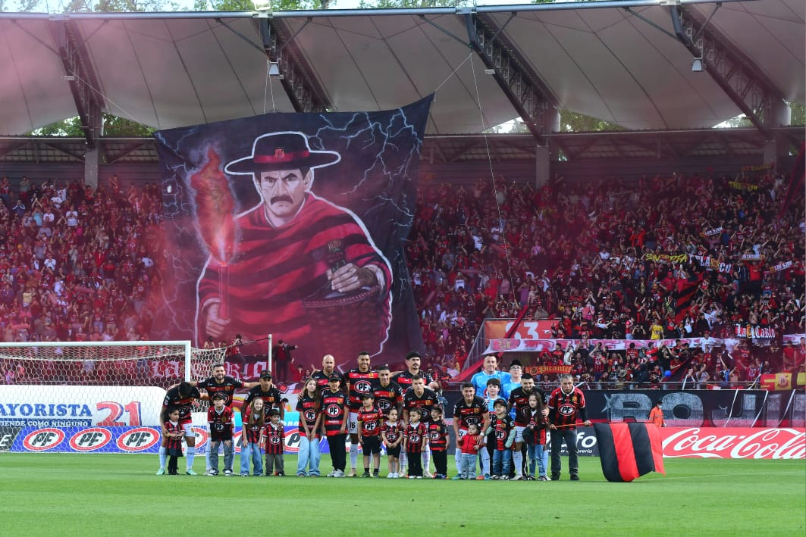

Primer equipo
Primer equipo
Aforo confirmado para el duelo entre Rangers y Cobreloa
Toda la información del operativo y el aforo para uno de los partidos más esperados de la temporada en el Estadio Fiscal de Talca.
Leer nota →
El Gigante del Maule
Más de un siglo de historia rojinegra. Vive al club dentro y fuera de la cancha: noticias, equipos y la pasión del Piducano.
Próximo encuentro
Por confirmar
La fecha y el rival se publicarán cuando el club los confirme oficialmente.
Actualidad
Primer equipo
Toda la información del operativo y el aforo para uno de los partidos más esperados de la temporada en el Estadio Fiscal de Talca.
Leer nota → Fútbol femenino
Fútbol femenino
 Fútbol formativo
Fútbol formativo
 Club
Club
Plantel
Desde 1902
Fundado el 2 de noviembre de 1902 en Talca, Rangers es uno de los clubes más antiguos del fútbol chileno. Conocido como “El Gigante del Maule” y por su hinchada piducana, juega de local en el Estadio Fiscal de Talca y lleva sus colores rojo y negro con orgullo maulino.
Conoce la historiaRangers TV
Resúmenes, entrevistas y la previa de cada partido. Todo el contenido audiovisual rojinegro en un solo lugar.
Ir a Rangers TV
Auspiciadores oficiales


Camiseta oficial, indumentaria y productos del club en la tienda rojinegra.